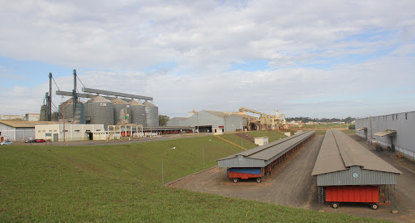

Jaboticabal is a Brazilian municipality in the state of São Paulo,
located in the Metropolitan Region of Ribeirão Preto.
The city is known for its three epithets:
"Cidade das Rosas", for the ornate squares, for the beautiful and lush gardens, for the countless rose bushes in the gardens of the houses and for the beauty of its women.
"Cidade da Música" or "Music Champion", for its history of musical glamor, led by its bands: Corporación Musical "Gomes e Puccini" and Banda Philharmonic "Pietro Mascagni".
"Athenas Paulista", for its traditional colleges, schools, great men of its history, and, currently, for the presence of five units of higher education (including a campus of the Universidade Estadual Paulista).
Census Data - 2000 Total population: 70 853 Urban: 65 999 Rural: 5 854 Men: 36 851 Women: 35 002 Human Development Index (HDI-M): 0.815 very high.
Economy:
The municipality is located in one of the richest regions of the state, responsible for approximately 8.5% of its gross domestic product. Within a radius of one hundred kilometers from Jaboticabal, there are 83 municipalities that have their own tax revenue in excess of twenty million dollars, housing more than 2.8 million inhabitants.Jaboticabal also stands out as the largest producer of ceramic artifacts in Brazil, focused almost exclusively on the production of filters and vases, mostly made by hand, molded by hand, on wooden lathes. The municipality also has the highest peanut productivity in Brazil. 